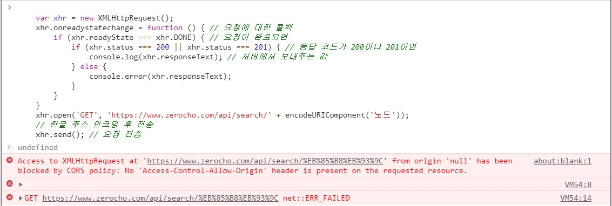
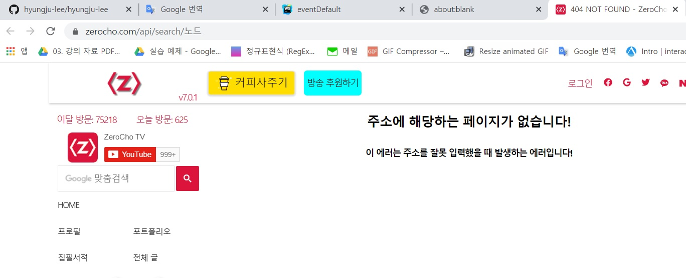

AJAX 요청을 보낼 때 'http://localhost:8003/search/노드' 처럼 주소에 한글이 들어가는 경우가 있습니다.
서버 종류에 따라 다르지만, 서버가 한글 주소를 이해하지 못하는 경우가 있는데,
이럴 때 window 객체의 메서드인 encodeURIComponent 메서드를 사용합니다.
노드에서도 사용할 수 있습니다.
<script>
var xhr = new XMLHttpRequest();
xhr.onreadystatechange = function () { // 요청에 대한 콜백
if (xhr.readyState === xhr.DONE) { // 요청이 완료되면
if (xhr.status === 200 || xhr.status === 201) { // 응답 코드가 200이나 201이면
console.log(xhr.responseText); // 서버에서 보내주는 값
} else {
console.error(xhr.responseText);
}
}
}
xhr.open('GET', 'https://www.zerocho.com/api/search/' + encodeURIComponent('노드'));
// 한글 주소 인코딩 후 전송
xhr.send(); // 요청 전송
</script>
한글 주소 부분만 encodeURIComponent 메서드로 감싸줍니다.


노드라는 한글 주소가 %EB%85%B8%EB%93%9C 라는 문자열로 변환되었습니다.
받는 쪽에서는 decodeURIComponent를 사용하면 됩니다.
역시 브라우저뿐만 아니라 노드에서도 사용할 수 있습니다.
decodeURIComponent('%EB%85%B8%EB%93%9C') // 노드
한글이 다시 원래 상태로 복구되었습니다.
이후에 나오는 예제에서 encodeURIComponent와 decodeURIComponent를 쓴 경우를 보게 될 텐데,
한글을 처리하기 위한 것이라고 생각하면 됩니다.